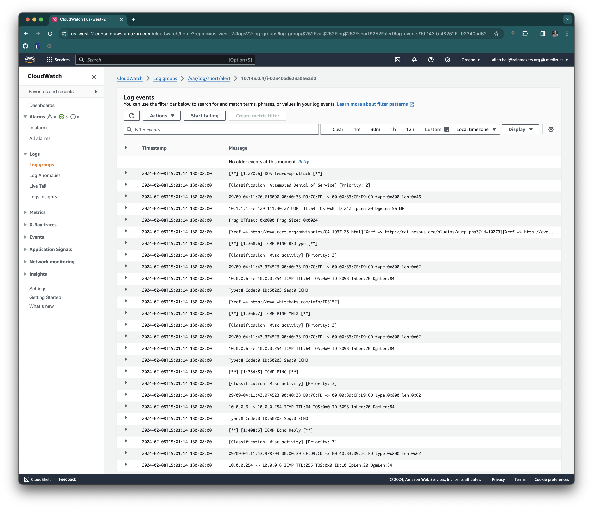
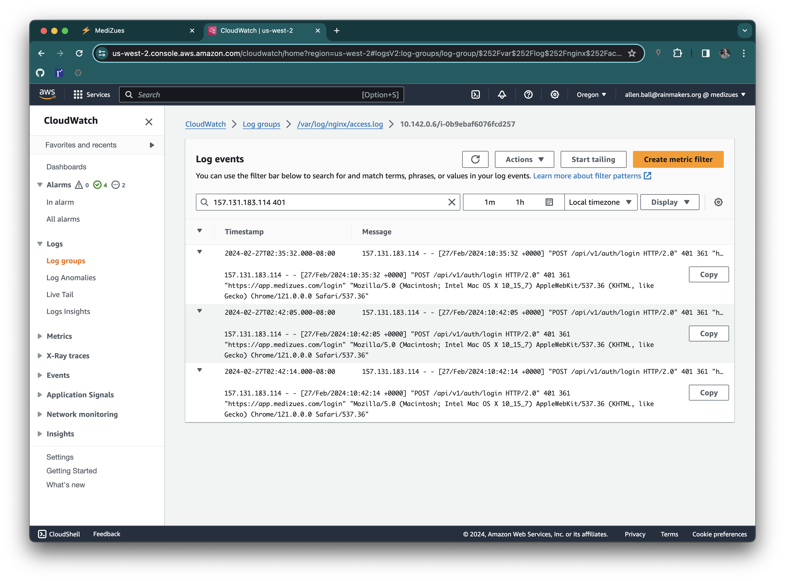
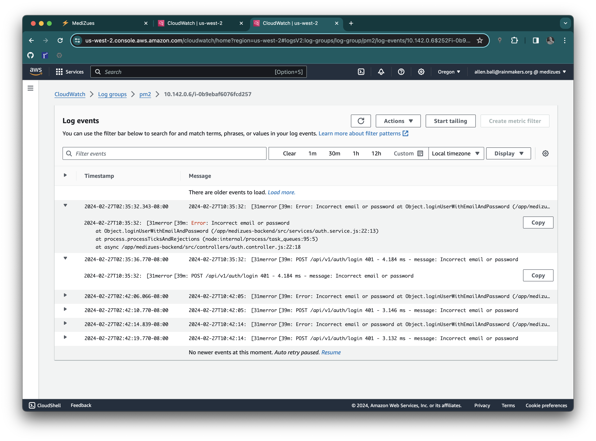

Solution:
Deploy snort on all AWS EC2 instances
Collect snort logs, including /var/log/snort/alert, to CloudWatch
- name: install
block:
- name: debconf snort
ansible.builtin.debconf:
name: snort
question: snort/address_range
vtyoe: string
value: "{{ [ipv4.network, ipv4.netmask] | join('/') | ansible.utils.ipaddr('net') }}"
- name: install snort
ansible.builtin.package:
name:
- snort
state: latest
notify: [ 'restart snort' ]
- name: snort
ansible.builtin.user:
name: snort
register: snort
- name: start snort
service: name=snort enabled=yes state=started
Further, the Amazon CloudWatch Agent is configured to collect the
/var/log/snort/alert and /var/log/snort/snort.log files to AWS Log Groups
with the same name. The /var/log/snort/alert log group is monitored for
alerts.
To test the configuration, network trafic capture files containing known
attacks were downloaded from
https://wiki.wireshark.org/SampleCaptures#Other_Sources_of_Capture_Files and
processed on a development EC2 instance with:
$ ssh 10.143.0.4
Last login: Thu Feb 8 21:58:21 2024 from 10.4.0.4
ubuntu@ip-10-143-0-4:~$ sudo snort -vde -c /etc/snort/snort.conf -l /var/log/snort -r teardrop.cap -K ascii
Running in IDS mode
--== Initializing Snort ==--
Initializing Output Plugins!
Initializing Preprocessors!
Initializing Plug-ins!
Parsing Rules file "/etc/snort/snort.conf"
PortVar 'HTTP_PORTS' defined : [ 80:81 311 383 591 593 901 1220 1414 1741 1830 2301 2381 2809 3037 3128 3702 4343 4848 5250 6988 7000:7001 7144:7145 7510 7777 7779 8000 8008 8014 8028 8080 8085 8088 8090 8118 8123 8180:8181 8243 8280 8300 8800 8888 8899 9000 9060 9080 9090:9091 9443 9999 11371 34443:34444 41080 50002 55555 ]
PortVar 'SHELLCODE_PORTS' defined : [ 0:79 81:65535 ]
PortVar 'ORACLE_PORTS' defined : [ 1024:65535 ]
PortVar 'SSH_PORTS' defined : [ 22 ]
PortVar 'FTP_PORTS' defined : [ 21 2100 3535 ]
PortVar 'SIP_PORTS' defined : [ 5060:5061 5600 ]
PortVar 'FILE_DATA_PORTS' defined : [ 80:81 110 143 311 383 591 593 901 1220 1414 1741 1830 2301 2381 2809 3037 3128 3702 4343 4848 5250 6988 7000:7001 7144:7145 7510 7777 7779 8000 8008 8014 8028 8080 8085 8088 8090 8118 8123 8180:8181 8243 8280 8300 8800 8888 8899 9000 9060 9080 9090:9091 9443 9999 11371 34443:34444 41080 50002 55555 ]
PortVar 'GTP_PORTS' defined : [ 2123 2152 3386 ]
Detection:
Search-Method = AC-Full-Q
Split Any/Any group = enabled
Search-Method-Optimizations = enabled
Maximum pattern length = 20
Tagged Packet Limit: 256
Loading dynamic engine /usr/lib/snort_dynamicengine/libsf_engine.so... done
Loading all dynamic detection libs from /usr/lib/snort_dynamicrules...
WARNING: No dynamic libraries found in directory /usr/lib/snort_dynamicrules.
Finished Loading all dynamic detection libs from /usr/lib/snort_dynamicrules
Loading all dynamic preprocessor libs from /usr/lib/snort_dynamicpreprocessor/...
Loading dynamic preprocessor library /usr/lib/snort_dynamicpreprocessor//libsf_ssh_preproc.so... done
Loading dynamic preprocessor library /usr/lib/snort_dynamicpreprocessor//libsf_reputation_preproc.so... done
Loading dynamic preprocessor library /usr/lib/snort_dynamicpreprocessor//libsf_smtp_preproc.so... done
Loading dynamic preprocessor library /usr/lib/snort_dynamicpreprocessor//libsf_modbus_preproc.so... done
Loading dynamic preprocessor library /usr/lib/snort_dynamicpreprocessor//libsf_sdf_preproc.so... done
Loading dynamic preprocessor library /usr/lib/snort_dynamicpreprocessor//libsf_dns_preproc.so... done
Loading dynamic preprocessor library /usr/lib/snort_dynamicpreprocessor//libsf_imap_preproc.so... done
Loading dynamic preprocessor library /usr/lib/snort_dynamicpreprocessor//libsf_sip_preproc.so... done
Loading dynamic preprocessor library /usr/lib/snort_dynamicpreprocessor//libsf_pop_preproc.so... done
Loading dynamic preprocessor library /usr/lib/snort_dynamicpreprocessor//libsf_dnp3_preproc.so... done
Loading dynamic preprocessor library /usr/lib/snort_dynamicpreprocessor//libsf_ftptelnet_preproc.so... done
Loading dynamic preprocessor library /usr/lib/snort_dynamicpreprocessor//libsf_gtp_preproc.so... done
Loading dynamic preprocessor library /usr/lib/snort_dynamicpreprocessor//libsf_dce2_preproc.so... done
Loading dynamic preprocessor library /usr/lib/snort_dynamicpreprocessor//libsf_ssl_preproc.so... done
Finished Loading all dynamic preprocessor libs from /usr/lib/snort_dynamicpreprocessor/
Log directory = /var/log/snort
WARNING: ip4 normalizations disabled because not inline.
WARNING: tcp normalizations disabled because not inline.
WARNING: icmp4 normalizations disabled because not inline.
WARNING: ip6 normalizations disabled because not inline.
WARNING: icmp6 normalizations disabled because not inline.
Frag3 global config:
Max frags: 65536
Fragment memory cap: 4194304 bytes
Frag3 engine config:
Bound Address: default
Target-based policy: WINDOWS
Fragment timeout: 180 seconds
Fragment min_ttl: 1
Fragment Anomalies: Alert
Overlap Limit: 10
Min fragment Length: 100
Max Expected Streams: 768
Stream global config:
Track TCP sessions: ACTIVE
Max TCP sessions: 262144
TCP cache pruning timeout: 30 seconds
TCP cache nominal timeout: 3600 seconds
Memcap (for reassembly packet storage): 8388608
Track UDP sessions: ACTIVE
Max UDP sessions: 131072
UDP cache pruning timeout: 30 seconds
UDP cache nominal timeout: 180 seconds
Track ICMP sessions: INACTIVE
Track IP sessions: INACTIVE
Log info if session memory consumption exceeds 1048576
Send up to 2 active responses
Wait at least 5 seconds between responses
Protocol Aware Flushing: ACTIVE
Maximum Flush Point: 16000
Stream TCP Policy config:
Bound Address: default
Reassembly Policy: WINDOWS
Timeout: 180 seconds
Limit on TCP Overlaps: 10
Maximum number of bytes to queue per session: 1048576
Maximum number of segs to queue per session: 2621
Options:
Require 3-Way Handshake: YES
3-Way Handshake Timeout: 180
Detect Anomalies: YES
Reassembly Ports:
21 client (Footprint)
22 client (Footprint)
23 client (Footprint)
25 client (Footprint)
42 client (Footprint)
53 client (Footprint)
79 client (Footprint)
80 client (Footprint) server (Footprint)
81 client (Footprint) server (Footprint)
109 client (Footprint)
110 client (Footprint)
111 client (Footprint)
113 client (Footprint)
119 client (Footprint)
135 client (Footprint)
136 client (Footprint)
137 client (Footprint)
139 client (Footprint)
143 client (Footprint)
161 client (Footprint)
additional ports configured but not printed.
Stream UDP Policy config:
Timeout: 180 seconds
HttpInspect Config:
GLOBAL CONFIG
Detect Proxy Usage: NO
IIS Unicode Map Filename: /etc/snort/unicode.map
IIS Unicode Map Codepage: 1252
Memcap used for logging URI and Hostname: 150994944
Max Gzip Memory: 104857600
Max Gzip Sessions: 201649
Gzip Compress Depth: 65535
Gzip Decompress Depth: 65535
DEFAULT SERVER CONFIG:
Server profile: All
Ports (PAF): 80 81 311 383 591 593 901 1220 1414 1741 1830 2301 2381 2809 3037 3128 3702 4343 4848 5250 6988 7000 7001 7144 7145 7510 7777 7779 8000 8008 8014 8028 8080 8085 8088 8090 8118 8123 8180 8181 8243 8280 8300 8800 8888 8899 9000 9060 9080 9090 9091 9443 9999 11371 34443 34444 41080 50002 55555
Server Flow Depth: 0
Client Flow Depth: 0
Max Chunk Length: 500000
Small Chunk Length Evasion: chunk size <= 10, threshold >= 5 times
Max Header Field Length: 750
Max Number Header Fields: 100
Max Number of WhiteSpaces allowed with header folding: 200
Inspect Pipeline Requests: YES
URI Discovery Strict Mode: NO
Allow Proxy Usage: NO
Disable Alerting: NO
Oversize Dir Length: 500
Only inspect URI: NO
Normalize HTTP Headers: NO
Inspect HTTP Cookies: YES
Inspect HTTP Responses: YES
Extract Gzip from responses: YES
Decompress response files:
Unlimited decompression of gzip data from responses: YES
Normalize Javascripts in HTTP Responses: YES
Max Number of WhiteSpaces allowed with Javascript Obfuscation in HTTP responses: 200
Normalize HTTP Cookies: NO
Enable XFF and True Client IP: NO
Log HTTP URI data: NO
Log HTTP Hostname data: NO
Extended ASCII code support in URI: NO
Ascii: YES alert: NO
Double Decoding: YES alert: NO
%U Encoding: YES alert: YES
Bare Byte: YES alert: NO
UTF 8: YES alert: NO
IIS Unicode: YES alert: NO
Multiple Slash: YES alert: NO
IIS Backslash: YES alert: NO
Directory Traversal: YES alert: NO
Web Root Traversal: YES alert: NO
Apache WhiteSpace: YES alert: NO
IIS Delimiter: YES alert: NO
IIS Unicode Map: GLOBAL IIS UNICODE MAP CONFIG
Non-RFC Compliant Characters: 0x00 0x01 0x02 0x03 0x04 0x05 0x06 0x07
Whitespace Characters: 0x09 0x0b 0x0c 0x0d
rpc_decode arguments:
Ports to decode RPC on: 111 32770 32771 32772 32773 32774 32775 32776 32777 32778 32779
alert_fragments: INACTIVE
alert_large_fragments: INACTIVE
alert_incomplete: INACTIVE
alert_multiple_requests: INACTIVE
FTPTelnet Config:
GLOBAL CONFIG
Inspection Type: stateful
Check for Encrypted Traffic: YES alert: NO
Continue to check encrypted data: YES
TELNET CONFIG:
Ports: 23
Are You There Threshold: 20
Normalize: YES
Detect Anomalies: YES
FTP CONFIG:
FTP Server: default
Ports (PAF): 21 2100 3535
Check for Telnet Cmds: YES alert: YES
Ignore Telnet Cmd Operations: YES alert: YES
Ignore open data channels: NO
FTP Client: default
Check for Bounce Attacks: YES alert: YES
Check for Telnet Cmds: YES alert: YES
Ignore Telnet Cmd Operations: YES alert: YES
Max Response Length: 256
SMTP Config:
Ports: 25 465 587 691
Inspection Type: Stateful
Normalize: ATRN AUTH BDAT DATA DEBUG EHLO EMAL ESAM ESND ESOM ETRN EVFY EXPN HELO HELP IDENT MAIL NOOP ONEX QUEU QUIT RCPT RSET SAML SEND STARTTLS SOML TICK TIME TURN TURNME VERB VRFY X-EXPS XADR XAUTH XCIR XEXCH50 XGEN XLICENSE X-LINK2STATE XQUE XSTA XTRN XUSR CHUNKING X-ADAT X-DRCP X-ERCP X-EXCH50
Ignore Data: No
Ignore TLS Data: No
Ignore SMTP Alerts: No
Max Command Line Length: 512
Max Specific Command Line Length:
ATRN:255 AUTH:246 BDAT:255 DATA:246 DEBUG:255
EHLO:500 EMAL:255 ESAM:255 ESND:255 ESOM:255
ETRN:246 EVFY:255 EXPN:255 HELO:500 HELP:500
IDENT:255 MAIL:260 NOOP:255 ONEX:246 QUEU:246
QUIT:246 RCPT:300 RSET:246 SAML:246 SEND:246
SIZE:255 STARTTLS:246 SOML:246 TICK:246 TIME:246
TURN:246 TURNME:246 VERB:246 VRFY:255 X-EXPS:246
XADR:246 XAUTH:246 XCIR:246 XEXCH50:246 XGEN:246
XLICENSE:246 X-LINK2STATE:246 XQUE:246 XSTA:246 XTRN:246
XUSR:246
Max Header Line Length: 1000
Max Response Line Length: 512
X-Link2State Alert: Yes
Drop on X-Link2State Alert: No
Alert on commands: None
Alert on unknown commands: No
SMTP Memcap: 838860
MIME Max Mem: 838860
Base64 Decoding: Enabled
Base64 Decoding Depth: Unlimited
Quoted-Printable Decoding: Enabled
Quoted-Printable Decoding Depth: Unlimited
Unix-to-Unix Decoding: Enabled
Unix-to-Unix Decoding Depth: Unlimited
Non-Encoded MIME attachment Extraction: Enabled
Non-Encoded MIME attachment Extraction Depth: Unlimited
Log Attachment filename: Enabled
Log MAIL FROM Address: Enabled
Log RCPT TO Addresses: Enabled
Log Email Headers: Enabled
Email Hdrs Log Depth: 1464
SSH config:
Autodetection: ENABLED
Challenge-Response Overflow Alert: ENABLED
SSH1 CRC32 Alert: ENABLED
Server Version String Overflow Alert: ENABLED
Protocol Mismatch Alert: ENABLED
Bad Message Direction Alert: DISABLED
Bad Payload Size Alert: DISABLED
Unrecognized Version Alert: DISABLED
Max Encrypted Packets: 20
Max Server Version String Length: 100
MaxClientBytes: 19600 (Default)
Ports:
22
DCE/RPC 2 Preprocessor Configuration
Global Configuration
DCE/RPC Defragmentation: Enabled
Memcap: 102400 KB
Events: co
SMB Fingerprint policy: Disabled
Server Default Configuration
Policy: WinXP
Detect ports (PAF)
SMB: 139 445
TCP: 135
UDP: 135
RPC over HTTP server: 593
RPC over HTTP proxy: None
Autodetect ports (PAF)
SMB: None
TCP: 1025-65535
UDP: 1025-65535
RPC over HTTP server: 1025-65535
RPC over HTTP proxy: None
Invalid SMB shares: C$ D$ ADMIN$
Maximum SMB command chaining: 3 commands
SMB file inspection: Disabled
DNS config:
DNS Client rdata txt Overflow Alert: ACTIVE
Obsolete DNS RR Types Alert: INACTIVE
Experimental DNS RR Types Alert: INACTIVE
Ports: 53
SSLPP config:
Encrypted packets: not inspected
Ports:
443 465 563 636 989
992 993 994 995 7801
7802 7900 7901 7902 7903
7904 7905 7906 7907 7908
7909 7910 7911 7912 7913
7914 7915 7916 7917 7918
7919 7920
Server side data is trusted
Maximum SSL Heartbeat length: 0
Sensitive Data preprocessor config:
Global Alert Threshold: 25
Masked Output: DISABLED
SIP config:
Max number of sessions: 40000
Max number of dialogs in a session: 4 (Default)
Status: ENABLED
Ignore media channel: DISABLED
Max URI length: 512
Max Call ID length: 80
Max Request name length: 20 (Default)
Max From length: 256 (Default)
Max To length: 256 (Default)
Max Via length: 1024 (Default)
Max Contact length: 512
Max Content length: 2048
Ports:
5060 5061 5600
Methods:
invite cancel ack bye register options refer subscribe update join info message notify benotify do qauth sprack publish service unsubscribe prack
IMAP Config:
Ports: 143
IMAP Memcap: 838860
MIME Max Mem: 838860
Base64 Decoding: Enabled
Base64 Decoding Depth: Unlimited
Quoted-Printable Decoding: Enabled
Quoted-Printable Decoding Depth: Unlimited
Unix-to-Unix Decoding: Enabled
Unix-to-Unix Decoding Depth: Unlimited
Non-Encoded MIME attachment Extraction: Enabled
Non-Encoded MIME attachment Extraction Depth: Unlimited
POP Config:
Ports: 110
POP Memcap: 838860
MIME Max Mem: 838860
Base64 Decoding: Enabled
Base64 Decoding Depth: Unlimited
Quoted-Printable Decoding: Enabled
Quoted-Printable Decoding Depth: Unlimited
Unix-to-Unix Decoding: Enabled
Unix-to-Unix Decoding Depth: Unlimited
Non-Encoded MIME attachment Extraction: Enabled
Non-Encoded MIME attachment Extraction Depth: Unlimited
Modbus config:
Ports:
502
DNP3 config:
Memcap: 262144
Check Link-Layer CRCs: ENABLED
Ports:
20000
+++++++++++++++++++++++++++++++++++++++++++++++++++
Initializing rule chains...
WARNING: /etc/snort/rules/chat.rules(33) threshold (in rule) is deprecated; use detection_filter instead.
WARNING: /etc/snort/rules/community-sql-injection.rules(6) GID 1 SID 100000106 in rule duplicates previous rule. Ignoring old rule.
...
WARNING: /etc/snort/rules/community-web-php.rules(474) GID 1 SID 100000934 in rule duplicates previous rule. Ignoring old rule.
4150 Snort rules read
3476 detection rules
0 decoder rules
0 preprocessor rules
3476 Option Chains linked into 271 Chain Headers
0 Dynamic rules
+++++++++++++++++++++++++++++++++++++++++++++++++++
+-------------------[Rule Port Counts]---------------------------------------
| tcp udp icmp ip
| src 151 18 0 0
| dst 3306 126 0 0
| any 383 48 145 22
| nc 27 8 94 20
| s+d 12 5 0 0
+----------------------------------------------------------------------------
+-----------------------[detection-filter-config]------------------------------
| memory-cap : 1048576 bytes
+-----------------------[detection-filter-rules]-------------------------------
| none
-------------------------------------------------------------------------------
+-----------------------[rate-filter-config]-----------------------------------
| memory-cap : 1048576 bytes
+-----------------------[rate-filter-rules]------------------------------------
| none
-------------------------------------------------------------------------------
+-----------------------[event-filter-config]----------------------------------
| memory-cap : 1048576 bytes
+-----------------------[event-filter-global]----------------------------------
| none
+-----------------------[event-filter-local]-----------------------------------
| gen-id=1 sig-id=2923 type=Threshold tracking=dst count=10 seconds=60
| gen-id=1 sig-id=2494 type=Both tracking=dst count=20 seconds=60
| gen-id=1 sig-id=3273 type=Threshold tracking=src count=5 seconds=2
| gen-id=1 sig-id=2496 type=Both tracking=dst count=20 seconds=60
| gen-id=1 sig-id=2495 type=Both tracking=dst count=20 seconds=60
| gen-id=1 sig-id=2924 type=Threshold tracking=dst count=10 seconds=60
| gen-id=1 sig-id=2275 type=Threshold tracking=dst count=5 seconds=60
| gen-id=1 sig-id=2523 type=Both tracking=dst count=10 seconds=10
| gen-id=1 sig-id=1991 type=Limit tracking=src count=1 seconds=60
| gen-id=1 sig-id=3152 type=Threshold tracking=src count=5 seconds=2
+-----------------------[suppression]------------------------------------------
| none
-------------------------------------------------------------------------------
Rule application order: activation->dynamic->pass->drop->sdrop->reject->alert->log
Verifying Preprocessor Configurations!
WARNING: flowbits key 'ms_sql_seen_dns' is checked but not ever set.
WARNING: flowbits key 'smb.tree.create.llsrpc' is set but not ever checked.
33 out of 1024 flowbits in use.
[ Port Based Pattern Matching Memory ]
+- [ Aho-Corasick Summary ] -------------------------------------
| Storage Format : Full-Q
| Finite Automaton : DFA
| Alphabet Size : 256 Chars
| Sizeof State : Variable (1,2,4 bytes)
| Instances : 215
| 1 byte states : 204
| 2 byte states : 11
| 4 byte states : 0
| Characters : 64982
| States : 32135
| Transitions : 872051
| State Density : 10.6%
| Patterns : 5055
| Match States : 3855
| Memory (MB) : 17.00
| Patterns : 0.51
| Match Lists : 1.02
| DFA
| 1 byte states : 1.02
| 2 byte states : 14.05
| 4 byte states : 0.00
+----------------------------------------------------------------
[ Number of patterns truncated to 20 bytes: 1039 ]
pcap DAQ configured to read-file.
Acquiring network traffic from "teardrop.cap".
Reload thread starting...
Reload thread started, thread 0x7fefe689d700 (52422)
WARNING: active responses disabled since DAQ can't inject packets.
--== Initialization Complete ==--
,,_ -*> Snort! <*-
o" )~ Version 2.9.7.0 GRE (Build 149)
'''' By Martin Roesch & The Snort Team: http://www.snort.org/contact#team
Copyright (C) 2014 Cisco and/or its affiliates. All rights reserved.
Copyright (C) 1998-2013 Sourcefire, Inc., et al.
Using libpcap version 1.9.1 (with TPACKET_V3)
Using PCRE version: 8.39 2016-06-14
Using ZLIB version: 1.2.11
Rules Engine: SF_SNORT_DETECTION_ENGINE Version 2.4 <Build 1>
Preprocessor Object: SF_SSLPP Version 1.1 <Build 4>
Preprocessor Object: SF_DCERPC2 Version 1.0 <Build 3>
Preprocessor Object: SF_GTP Version 1.1 <Build 1>
Preprocessor Object: SF_FTPTELNET Version 1.2 <Build 13>
Preprocessor Object: SF_DNP3 Version 1.1 <Build 1>
Preprocessor Object: SF_POP Version 1.0 <Build 1>
Preprocessor Object: SF_SIP Version 1.1 <Build 1>
Preprocessor Object: SF_IMAP Version 1.0 <Build 1>
Preprocessor Object: SF_DNS Version 1.1 <Build 4>
Preprocessor Object: SF_SDF Version 1.1 <Build 1>
Preprocessor Object: SF_MODBUS Version 1.1 <Build 1>
Preprocessor Object: SF_SMTP Version 1.1 <Build 9>
Preprocessor Object: SF_REPUTATION Version 1.1 <Build 1>
Preprocessor Object: SF_SSH Version 1.1 <Build 3>
Commencing packet processing (pid=52414)
09/09-04:11:26.294020 00:40:33:D9:7C:FD -> 00:00:39:CF:D9:CD type:0x800 len:0x4E
10.0.0.6:1035 -> 151.164.1.8:53 UDP TTL:64 TOS:0x0 ID:5092 IpLen:20 DgmLen:64
Len: 36
7D 9E 01 00 00 01 00 00 00 00 00 00 06 70 69 63 }............pic
61 72 64 07 75 74 68 73 63 73 61 03 65 64 75 00 ard.uthscsa.edu.
00 01 00 01 ....
=+=+=+=+=+=+=+=+=+=+=+=+=+=+=+=+=+=+=+=+=+=+=+=+=+=+=+=+=+=+=+=+=+=+=+=+=+
09/09-04:11:26.613908 00:00:39:CF:D9:CD -> 00:40:33:D9:7C:FD type:0x800 len:0x121
151.164.1.8:53 -> 10.0.0.6:1035 UDP TTL:246 TOS:0x0 ID:40029 IpLen:20 DgmLen:275 DF
Len: 247
7D 9E 85 80 00 01 00 01 00 05 00 05 06 70 69 63 }............pic
61 72 64 07 75 74 68 73 63 73 61 03 65 64 75 00 ard.uthscsa.edu.
00 01 00 01 C0 0C 00 01 00 01 00 00 0E 10 00 04 ................
81 6F 1E 1B 07 75 74 68 73 63 73 61 03 65 64 75 .o...uthscsa.edu
00 00 02 00 01 00 00 0E 10 00 09 06 6B 65 6E 6F ............keno
62 69 C0 34 C0 34 00 02 00 01 00 00 0E 10 00 07 bi.4.4..........
04 6A 69 6E 6E C0 34 C0 34 00 02 00 01 00 00 0E .jinn.4.4.......
10 00 0C 04 64 6E 73 31 04 6E 6A 69 74 C0 3C C0 ....dns1.njit.<.
34 00 02 00 01 00 00 0E 10 00 08 05 65 6C 7A 69 4...........elzi
70 C0 34 C0 34 00 02 00 01 00 00 0E 10 00 08 05 p.4.4...........
61 72 77 65 6E C0 34 C0 4B 00 01 00 01 00 00 0E arwen.4.K.......
10 00 04 81 6F 1A 06 C0 60 00 01 00 01 00 00 0E ....o...`.......
10 00 04 81 6F 1A 07 C0 73 00 01 00 01 00 01 03 ....o...s.......
82 00 04 80 EB FB 0A C0 8B 00 01 00 01 00 00 0E ................
10 00 04 81 6F 01 0B C0 9F 00 01 00 01 00 00 0E ....o...........
10 00 04 81 6F 0B 51 ....o.Q
=+=+=+=+=+=+=+=+=+=+=+=+=+=+=+=+=+=+=+=+=+=+=+=+=+=+=+=+=+=+=+=+=+=+=+=+=+
09/09-04:11:26.616445 00:40:33:D9:7C:FD -> 00:00:39:CF:D9:CD type:0x800 len:0x26
10.1.1.1 -> 129.111.30.27 UDP TTL:64 TOS:0x0 ID:242 IpLen:20 DgmLen:24
Frag Offset: 0x0003 Frag Size: 0x0004
7C AB 4E E5 |.N.
=+=+=+=+=+=+=+=+=+=+=+=+=+=+=+=+=+=+=+=+=+=+=+=+=+=+=+=+=+=+=+=+=+=+=+=+=+
===============================================================================
Run time for packet processing was 1.389 seconds
Snort processed 17 packets.
Snort ran for 0 days 0 hours 0 minutes 1 seconds
Pkts/sec: 17
===============================================================================
Memory usage summary:
Total non-mmapped bytes (arena): 46100480
Bytes in mapped regions (hblkhd): 13746176
Total allocated space (uordblks): 40492080
Total free space (fordblks): 5608400
Topmost releasable block (keepcost): 26784
===============================================================================
Packet I/O Totals:
Received: 17
Analyzed: 17 (100.000%)
Dropped: 0 ( 0.000%)
Filtered: 0 ( 0.000%)
Outstanding: 0 ( 0.000%)
Injected: 0
===============================================================================
Breakdown by protocol (includes rebuilt packets):
Eth: 17 (100.000%)
VLAN: 0 ( 0.000%)
IP4: 6 ( 35.294%)
Frag: 2 ( 11.765%)
ICMP: 2 ( 11.765%)
UDP: 3 ( 17.647%)
TCP: 0 ( 0.000%)
IP6: 0 ( 0.000%)
IP6 Ext: 0 ( 0.000%)
IP6 Opts: 0 ( 0.000%)
Frag6: 0 ( 0.000%)
ICMP6: 0 ( 0.000%)
UDP6: 0 ( 0.000%)
TCP6: 0 ( 0.000%)
Teredo: 0 ( 0.000%)
ICMP-IP: 0 ( 0.000%)
IP4/IP4: 0 ( 0.000%)
IP4/IP6: 0 ( 0.000%)
IP6/IP4: 0 ( 0.000%)
IP6/IP6: 0 ( 0.000%)
GRE: 0 ( 0.000%)
GRE Eth: 0 ( 0.000%)
GRE VLAN: 0 ( 0.000%)
GRE IP4: 0 ( 0.000%)
GRE IP6: 0 ( 0.000%)
GRE IP6 Ext: 0 ( 0.000%)
GRE PPTP: 0 ( 0.000%)
GRE ARP: 0 ( 0.000%)
GRE IPX: 0 ( 0.000%)
GRE Loop: 0 ( 0.000%)
MPLS: 0 ( 0.000%)
ARP: 5 ( 29.412%)
IPX: 0 ( 0.000%)
Eth Loop: 5 ( 29.412%)
Eth Disc: 0 ( 0.000%)
IP4 Disc: 0 ( 0.000%)
IP6 Disc: 0 ( 0.000%)
TCP Disc: 0 ( 0.000%)
UDP Disc: 0 ( 0.000%)
ICMP Disc: 0 ( 0.000%)
All Discard: 0 ( 0.000%)
Other: 1 ( 5.882%)
Bad Chk Sum: 0 ( 0.000%)
Bad TTL: 0 ( 0.000%)
S5 G 1: 0 ( 0.000%)
S5 G 2: 0 ( 0.000%)
Total: 17
===============================================================================
Action Stats:
Alerts: 5 ( 29.412%)
Logged: 5 ( 29.412%)
Passed: 0 ( 0.000%)
Limits:
Match: 0
Queue: 0
Log: 0
Event: 0
Alert: 0
Verdicts:
Allow: 17 (100.000%)
Block: 0 ( 0.000%)
Replace: 0 ( 0.000%)
Whitelist: 0 ( 0.000%)
Blacklist: 0 ( 0.000%)
Ignore: 0 ( 0.000%)
Retry: 0 ( 0.000%)
===============================================================================
Frag3 statistics:
Total Fragments: 2
Frags Reassembled: 0
Discards: 1
Memory Faults: 0
Timeouts: 0
Overlaps: 1
Anomalies: 2
Alerts: 2
Drops: 0
FragTrackers Added: 1
FragTrackers Dumped: 1
FragTrackers Auto Freed: 0
Frag Nodes Inserted: 1
Frag Nodes Deleted: 1
===============================================================================
===============================================================================
Stream statistics:
Total sessions: 1
TCP sessions: 0
UDP sessions: 1
ICMP sessions: 0
IP sessions: 0
TCP Prunes: 0
UDP Prunes: 0
ICMP Prunes: 0
IP Prunes: 0
TCP StreamTrackers Created: 0
TCP StreamTrackers Deleted: 0
TCP Timeouts: 0
TCP Overlaps: 0
TCP Segments Queued: 0
TCP Segments Released: 0
TCP Rebuilt Packets: 0
TCP Segments Used: 0
TCP Discards: 0
TCP Gaps: 0
UDP Sessions Created: 1
UDP Sessions Deleted: 1
UDP Timeouts: 0
UDP Discards: 0
Events: 0
Internal Events: 0
TCP Port Filter
Filtered: 0
Inspected: 0
Tracked: 0
UDP Port Filter
Filtered: 0
Inspected: 0
Tracked: 1
===============================================================================
===============================================================================
SMTP Preprocessor Statistics
Total sessions : 0
Max concurrent sessions : 0
===============================================================================
dcerpc2 Preprocessor Statistics
Total sessions: 0
===============================================================================
===============================================================================
SIP Preprocessor Statistics
Total sessions: 0
===============================================================================
...
Snort exiting
ubuntu@ip-10-143-0-4:~$ cat /var/log/snort/alert
[**] [1:270:6] DOS Teardrop attack [**]
[Classification: Attempted Denial of Service] [Priority: 2]
09/09-04:11:26.616090 00:40:33:D9:7C:FD -> 00:00:39:CF:D9:CD type:0x800 len:0x46
10.1.1.1 -> 129.111.30.27 UDP TTL:64 TOS:0x0 ID:242 IpLen:20 DgmLen:56 MF
Frag Offset: 0x0000 Frag Size: 0x0024
[Xref => http://www.cert.org/advisories/CA-1997-28.html][Xref => http://cgi.nessus.org/plugins/dump.php3?id=10279][Xref => http://cve.mitre.org/cgi-bin/cvename.cgi?name=1999-0015][Xref => http://www.securityfocus.com/bid/124]
[**] [1:368:6] ICMP PING BSDtype [**]
[Classification: Misc activity] [Priority: 3]
09/09-04:11:43.974523 00:40:33:D9:7C:FD -> 00:00:39:CF:D9:CD type:0x800 len:0x62
10.0.0.6 -> 10.0.0.254 ICMP TTL:64 TOS:0x0 ID:5093 IpLen:20 DgmLen:84
Type:8 Code:0 ID:50203 Seq:0 ECHO
[Xref => http://www.whitehats.com/info/IDS152]
[**] [1:366:7] ICMP PING *NIX [**]
[Classification: Misc activity] [Priority: 3]
09/09-04:11:43.974523 00:40:33:D9:7C:FD -> 00:00:39:CF:D9:CD type:0x800 len:0x62
10.0.0.6 -> 10.0.0.254 ICMP TTL:64 TOS:0x0 ID:5093 IpLen:20 DgmLen:84
Type:8 Code:0 ID:50203 Seq:0 ECHO
[**] [1:384:5] ICMP PING [**]
[Classification: Misc activity] [Priority: 3]
09/09-04:11:43.974523 00:40:33:D9:7C:FD -> 00:00:39:CF:D9:CD type:0x800 len:0x62
10.0.0.6 -> 10.0.0.254 ICMP TTL:64 TOS:0x0 ID:5093 IpLen:20 DgmLen:84
Type:8 Code:0 ID:50203 Seq:0 ECHO
[**] [1:408:5] ICMP Echo Reply [**]
[Classification: Misc activity] [Priority: 3]
09/09-04:11:43.978794 00:00:39:CF:D9:CD -> 00:40:33:D9:7C:FD type:0x800 len:0x62
10.0.0.254 -> 10.0.0.6 ICMP TTL:255 TOS:0x0 ID:10 IpLen:20 DgmLen:84
Type:0 Code:0 ID:50203 Seq:0 ECHO REPLY
The configuration detected the attack and logged the alert to CloudWatch:

Development and staging are segregated from production by being separate VPCs.
Production MongoDB services are provided by MongoDB Atlas.
The MediZues configuration will be scaled as required by customer traffic and
this diagram will be updated accordingly.
Development and staging are segregated from production by being separate VPCs.
"Public" and "private" subnets are configured in each availability zone for
planned scaling of the solution.
This document provides the screenshots of the corresponding log entries from a
known denied login attempt.
Medizues Login Screen (with invalid username and password):
Errors for the event are recorded in the nginx/access.log CloudWatch logs:

And further detail for the same events are included in the pm2 logs:

https://app.vanta.com/documents/incident-report-example
https://docs.google.com/document/d/1GQ65anb27htT60FDE3H93ee-DBPXxtgtGLoEcn_SpQg/edit?usp=drive_link
https://app.vanta.com/documents/incident-response-plan-test
https://docs.google.com/document/d/1B3kvCemQIFNEmhe62lVWBMdyNS1RnUcz2QlACZrqjbw/edit?usp=drive_link
https://app.vanta.com/documents/access-reviews